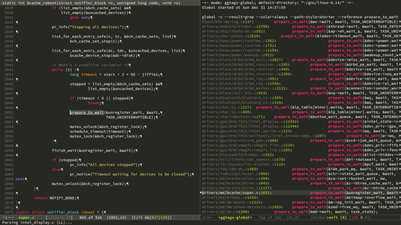

Emacs笔记
目录
- 1. Emacs介绍
- 2. 学习经历
- 3. 演示
- 4. 安装
- 5. 基本配置
- 6. Org mode
- 7. 开发环境
- 8. Packages
- 9. lisp
- 10. 使用
- 11. FAQ
- 11.1. C-m defaults bind to RET
- 11.2. 安装时提示Select coding system (default utf-8):
- 11.3. mingw下gtags遇到aux.h/aux.c时报错退出
- 11.4. win下使能M-w拷贝选定字符串
- 11.5. win7 Chinese下ggtags工作异常，提示 Error running timer ‘ggtags-highlight-tag-at-point’: (file-error "Setting current directory" "No error" "e:/t /")
- 11.6. win7 org-bullets三级以下目录乱码,通过C-u C-x=可以看到显示"no font"
- 11.7. ido-find-file打开文件时, 文件名是已有文件的前缀
- 11.8. counsel-find-file打开文件时, 文件名是已有文件的前缀
- 11.9. 无法加载一个package, 但无法正常安装 20171114
- 11.10. EMMS在Windows中文操作系统下无法播放中文名称多媒体 20171119
- 11.11. Emacs退出时提示"Active process exist; kill them and exit anyway" 20171119
- 11.12. TODO EMMS在Windows下无法调整音量, amixer找不到
- 11.13. DONE Windows
- 11.14. DONE Windows下动态库加载路径设置
- 12. 常用快捷键
- 13. 参考文档
- 14. 典型配置链接
- 15. 学习资源
- 16. Candidate
- 17. Packages Github List
- 18. youtube
- 19. Others
- 20. 资料索引
1 Emacs介绍
Emacs /ˈiːmæks/是一个文本编辑器家族，具备可扩展特征。GNU Emacs是使用最为广泛的 Emacs实现，具备可扩展、可定制、自文档化、实时显示特点。
20世纪70年代是编辑器的井喷期，有数以百计的编辑器出现。1972年发布的Emacs与1976年 发布的VI使用最为广泛。Emacs与VI(VIM)各有其利，两者有不同的设计理念，编辑器之战 (EN)已延续多年。相对比其他编辑器，Emacs与VIM有着更为陡峭的学习曲线与高昂的学习 成本。Emacs称为神之编辑器，VIM称为编辑器之神，一方面是形容其功能强大，另一方面 也描述其掌握难度。与VIM的专注相比，Emacs一直在功能蔓延，编辑文本、调试程序、浏览 网页、管理日程、收发邮件、阅读info&man、播放音乐视频，一切应有尽有。VI攻击Emacs 是一个伟大的操作系统，只缺个体面的编辑器。因此VI用户启动Emacs的shell，然后启动 一个vim编辑文本。业界流传程序员分为三种，一种是使用Emacs的，一种是使用Vim的， 剩下的是使用其他编辑器的。这当然是玩笑，我有使用SourceInsight和Sublime Text的 朋友，他们都是优秀的程序员。而另一方面也确实说明了这两种编辑器的影响力。截至 2017我使用VIM已有8年以上时间，但我尝试使用Emacs三个月后，充分体验到了Emacs的 可扩展、可定制特性，已将Emacs作为主编辑器使用。
2 学习经历
在我工作10年以后，我的工作内容有了较大变化，需要并行处理很多任务。脑袋里放着很多 事项，总担心遗漏某些任务（确实发生过），影响到了工作时的专注程度，也容易产生焦虑 情绪。在解决并发任务管理问题时，了解到了GTD，以及GTD工具Org Mode(GTD Homepage)， 这是我最初尝试Emacs的动机。尝试使用Emacs期间，从package、org、helm、swiper开始， 到company、ggtags、pdf-tools、dictionary(youdao/sdcv)、emms、eww(ergoemacs)、 google search、youtube(helm/ivy)，使用Emacs编辑文档代码(text/prog-mode、ggtags)、 安排计划(org-TODO/org-agenda)、捕获灵感(org-capture)、播放音乐(emms)、查看资料 (pdf-tools)、浏览网页(eww)、翻译单词(youdao-dictionary)、搜索资料(google-this、 helm-google)。对于Emacser而言，Emacs不仅仅是一个编辑器，而是一个操作系统，宿主 操作系统是Emacs的引导程序。这里是我录制的一个演示MP4(2.4MB大小)。
学习Emacs的过程中，借鉴了陈斌(GitHub)、子龙山人(GitHub)学习过程，也体验了Batsov (GitHub)、purcell(GitHub)等人配置。感谢他们的无私分享。每个人都有不同的学习 方式，我是观看了前六集子龙山人的视频，体验了一些典型的配置(prelude、purcell)后， 从零开始自己的配置，逐步增强完善。最初的一个月占用了较多的业余时间，其后就是在 闲暇时优化。这个过程中逐步的熟悉了Elisp编程，在索引时还看了一批优秀工程师的 博客文章，受益匪浅。回首去看，整个时间投入还是值得的。
我的相关配置和文档：
| 名称 | 链接 |
|---|---|
| GitHub | https://github.com/yygcode/.emacs.d |
| Http Homepage | http://ycode.org/emacs.html |
| Https Homepage | https://ycode.org/emacs.html |
| config download | git clone https://github.com/yygcode/.emacs.d.git |
3 演示
GNU Emacs不做配置启动界面是这个样子：
图1 emacs默认启动界面
我的配置启动时是这样的：
图2 emacs配置后启动界面
浏览代码时是这样：

图3 emacs浏览代码
这里是我使用的一个GIF演示(大小为2.4MB)：Emacs MP4
4 安装
4.1 Windows平台安装
4.1.1 版本选择
4.1.2 HOME环境变量
一般用户不希望使用默认的HOME路径(Emacs MS-Windows默认路径)，添加环境变量 (我的电脑->属性->高级系统设置->环境变量)HOME设置。比如设置为E:/work。设置后 注销账户再次登录生效。
更便捷的环境变量设置方式是配置快捷启动。参见AutohotKey。
4.1.3 Msys2 Mingw
MSYS2是Windows下软件发布和构建平台。参考我的MSYS2安装配置。MSYS2/Mingw64用以增强
emacs shell使用体验。安装后需添加 MSYS2, Mingw64 可执行文件与动态库路径到环境
变量 PATH ，方法类似上述HOME环境变量设置方法。
4.1.4 快捷键
用AutoHotkey(安装配置参考我的AutoHotkey安装配置)管理快捷键，更加便捷的修改环境 变量，启动Emacs：
EnvSet, HOME, E:\work EnvSet, PATH, F:\msys64\usr\bin;F:\msys64\mingw64\bin;%PATH% ^#e::Run C:\emacs-26.0.90-x86_64\bin\runemacs.exe -fs
AutoHotkey配置完毕后按下 Ctrl+Win+e 启动Emacs。
4.1.5 字体安装
我的Emacs配置中，Orgmode使用Source Code Pro字体，参考Win下安装Source Code Pro
安装。不安装字体时使用默认字体，效果稍弱。可设置Org Bullets 变量
org-bullets-bullet-list 为其他符号增强。
4.1.6 动态库配置
Emacs部分功能依赖外部动态库或者命令行程序。比如浏览网页依赖GnuTls和libxml2，听
音乐依赖mplayer，代码跳转依赖global/gtags/ctags。相关EXE/DLL文件可以从deps包
(e.g.: emacs-26.0.90-x86)64-deps)获取, 也可从
Sourceforge ezwinports(GNU software ports to MS-Windows)下载, 或参考
我的MSYS2安装配置安装MSYS2，用pacman安装需要的任意库。我极力推荐安装MSYS2。安装
MSYS2环境后，EXE/DLL文件在 msys2/usr/bin, msys2/mingw64/bin 两个目录。动态库
GnuTls与libxml2需要在启动时可用，不能通过配置文件设置（参考W32 README），因此
需要提前拷贝DLL到emacs可执行文件目录，或者设置合理的 PATH 环境变量，其他修改
exec-path, load-path 等变量，或在emacs配置文件中执行函数 setenv 都是无效的。
设置环境变量 PATH 方式是“我的电脑->属性->高级系统设置->高级”，修改环境变量
PATH ，修改完成后注销重新登录或重启生效。AutoHotkey是更便捷的修改方式。
AutoHotkey设置环境变量不需要重新登入登出，也不会影响其他程序运行环境。缺点是只在
AutoHotkey上下文有效，双击图标启动程序时环境变量不起作用。AutohotKey的更多细节
参见我的AutoHotkey安装配置。Emacs环境变量 PATH AutoHotkey配置如下：
最后需要处理的一个例外是libxml2。libxml及相关文件必须拷贝到runemacs.exe所在目录
才生效，这应该是Emacs libxml2相关编码或代码缺陷导致的（不支持搜索 PATH ）。
libxml2相关文件不多，只有四个：libxml2-2.dll、libiconv-2.dll、liblzma-5.dll、
zlib1.dll。使用ldd确认哪些库是libxml相关的：
~$ ldd libxml2-2.dll | grep mingw libiconv-2.dll => /mingw64/bin/libiconv-2.dll (0x66000000) liblzma-5.dll => /mingw64/bin/liblzma-5.dll (0x63cc0000) zlib1.dll => /mingw64/bin/zlib1.dll (0x62e80000) ~$ cp libxml2-2.dll libiconv-2.dll liblzma-5.dll zlib1.dll c:/emacs-26.0.90-x86_64/bin/
设置完毕后启动Emacs，查看 process-environment (C-h v) 观察 PATH 是否正确。
如果一切正常，而部分功能因找不到DLL异常，请确认库的版本是否正确。如果两者
不一致，请下载一致的版本，或尝试设置 dynamic-library-alist 变量解决。
4.2 Linux平台安装
Linux下使用包管理器直接安装即可，Debian安装指令如下：
sudo apt-get install emacs
我的配置英文字体Source Code Pro，中文字体微软雅黑，请参考这里配置。 Source Code Pro字体安装请参考Source Code Pro安装。
4.3 从源码构建
此节可能遇到各种问题，如无必要原因，请直接安装二进制版本。
4.3.1 Windows Msys2
下载Git或TAR包源码，准备MSYS2环境。Windows具体构建指令忘记保存，参考如下，遇到 缺少packages支持用pacman安装解决。
~$ pacman -S base-devel mingw-w64-x86_64-toolchain \ mingw-w64-x86_64-xpm-nox mingw-w64-x86_64-libtiff \ mingw-w64-x86_64-giflib mingw-w64-x86_64-jbigkit \ mingw-w64-x86_64-libpng mingw-w64-x86_64-libjpeg-turbo \ mingw-w64-x86_64-librsvg mingw-w64-x86_64-libxml2 \ mingw-w64-x86_64-gnutls ~$ git clone git://git.savannah.gnu.org/emacs.git ~$ ./autogen.sh ~$ ./configure ~$ make
这里是上述指令的参考页面：
Licensed under CC BY 4.0.
The following guidelines described how to compile GNU Emacs with MSYS2/MinGW-w64 combination. 中文版看这里. The official repository now has an INSTALL.W64 document based on this guideline.
Set up the MSYS2/MinGW-w64 build environment Download the x86_64 version of MSYS2 here, and install in your preferred directory, e.g. C:\msys64. Note that path containing spaces may causes problems. Run msys2_shell.bat in the C:\msys64 and you will see a BASH window opened. In the BASH prompt, use the following commands to install the necessary packages:
pacman -S base-devel mingw-w64-x86_64-toolchain \ mingw-w64-x86_64-xpm-nox mingw-w64-x86_64-libtiff \ mingw-w64-x86_64-giflib mingw-w64-x86_64-jbigkit \ mingw-w64-x86_64-libpng mingw-w64-x86_64-libjpeg-turbo \ mingw-w64-x86_64-librsvg mingw-w64-x86_64-libxml2 \ mingw-w64-x86_64-gnutls These packages are: Build required package
- base-devel
- mingw-w64-x86_64-toolchain
- Optional:
- For various image formats
- mingw-w64-x86_64-giflib
- mingw-w64-x86_64-jbigkit
- mingw-w64-x86_64-libjpeg-turbo
- mingw-w64-x86_64-libpng
- mingw-w64-x86_64-librsvg
- mingw-w64-x86_64-libtiff
- For libxml2
- mingw-w64-x86_64-libxml2
- For GnuTLS
- mingw-w64-x86_64-gnutls
Get the source code Since Emacs's development has finally migrated from Bazaar to Git, you can get Emacs's source code with the following two lines.
pacman -S git git clone git://git.savannah.gnu.org/emacs.git The first line installs Git and the second line get the code. For more information, read the quick start guide from EmacsWiki. Or you can download the release version from gnu ftp. It should be pointed that the the autocrlf feature of Git may mess up the configure file. Therefore it is better to disable this feature by running the command:
git config core.autocrlf false configure; make; make install Run mingw64_shell.bat in C:\msys64. This will open a BASH window for MinGW-w64 environment. In the BASH prompt, chdir to the directory of source code. Then run the following commands to build Emacs and install it in C:\emacs. If you are building the development version, the first line of the commands is needed.
./autogen.sh PKG_CONFIG_PATH=/mingw64/lib/pkgconfig ./configure –without-imagemagick make make install prefix=/c/emacs Note that I disable imagemagick because Emacs does not support it in Windows.
If all of the above are successfully done, you should have an Emacs installed in C:\emacs. However, it may not work properly since it depends on DLLs in the MinGW-w64 environment. I use the following command to make sure the DLLs are placed with the execution file:
cp /mingw64/bin/{libwinpthread-.dll,libXpm-noX.dll,libdbus-.dll} /c/emacs/bin cp /mingw64/bin/{libgomp-.dll,libgcc_s_seh-.dll,libglib-.dll} /c/emacs/bin cp /mingw64/bin/{libintl-.dll,libiconv-.dll,libgobject-.dll} /c/emacs/bin cp /mingw64/bin/{libffi-.dll,libgdk_pixbuf-.dll,libgio-.dll} /c/emacs/bin cp /mingw64/bin/{libgmodule-.dll,zlib.dll,librsvg-.dll} /c/emacs/bin cp /mingw64/bin/{libcairo-.dll,libcroco-.dll,libpango-.dll} /c/emacs/bin cp /mingw64/bin/{libpangocairo-.dll,libxml2-.dll,libfontconfig-.dll} /c/emacs/bin cp /mingw64/bin/{libfreetype-.dll,libpixman-.dll,libpng.dll} /c/emacs/bin cp /mingw64/bin/{libpangoft*.dll,libpangowin32-.dll,liblzma-.dll} /c/emacs/bin cp /mingw64/bin/{libexpat-.dll,libharfbuzz-.dll,libgnutls-.dll} /c/emacs/bin cp /mingw64/bin/{libgnutlsxx-.dll,libtiff-.dll,libtiffxx-.dll} /c/emacs/bin cp /mingw64/bin/{libjpeg-.dll,libgif-.dll,libbz2-.dll,libjbig-.dll} /c/emacs/bin cp /mingw64/bin/{libgmp-.dll,libhogweed-.dll,libnettle-.dll} /c/emacs/bin cp /mingw64/bin/{libp11-kit-.dll,libtasn1-*.dll} /c/emacs/bin If you only run Emacs in your PC and your MinGW-w64 binary folder (e.g. C:\msys64\mingw64\bin) is in PATH the above copy step can be optional.
Run Double click the runemacs.exe in C:\emacs\bin. If no errors occur, you have successfully built the 64-Bit version of GNU Emacs.
4.3.2 Debian 9.3.0
下载Emacs Git源码，打包26.0.90版本，用autogen.sh和configure配置构建，遇到缺少包 逐个解决。
~$ git clone git://git.savannah.gnu.org/emacs.git ~$ git archive --prefix=emacs-26.0.90/ --format=tar emacs-26.0.90 > ~/gnu/emacs-26.0.90.tar ~$ cd ~/gnu/ ~$ tar xvf emacs-26.0.90.tar ~$ cd emacs-26.0.90 ~$ ./autogen.sh ~$ make && sudo make install
4.4 配置
- 下载配置.
~$ git clone https://github.com/yygcode/.emacs.d.git
- 保持网络畅通，启动Emacs，自动下载安装包。Windows平台安装Packages过程中可能出现
部分错误, C-x C-c 退出重启继续。
5 基本配置
基本配置包括Windows/Linux特化、代理、界面、配色、字体、鼠标、行为标准化、桌面 保存等。
6 Org mode
6.1 静态页面发布
6.2 博客
6.3 文学编程
6.3.1 代码求值与安全性问题
Org mode代码块 END_SRC 处 C-c C-c 对代码块求值，结果在代码块其后 #+RESULTS
行。例如在如下代码 END_SRC 处求值：
也可执行 C-c C-v e 求值，对应函数 org-babel-execute-maybe 。
Org mode每个代码块类似于程序，运行会有风险。Org在代码块求值时，默认配置下交互式
提示降低风险。这可以阻止用户偶然性运行不可信代码。对于经验丰富的用户，通过修改
org-confirm-babel-evaluate 可定义交互方式。设置为 nil 时不进行任何提示，设置
为自定义的函数时，在求值前运行该函数，函数必须返回t或nil，返回t提示，返回nil不
提示。一般定义ditaa为不提示（没有风险）。参考如下定义：
7 开发环境
7.1 功能
- Jump to definition
- Auto completion
- On the fly syntax highlighting
- Find file in project
- Compile with one key press
- Graphical Debugger
7.2 tools
- tagging: ctags, etags, cscope, gtags/global
- syntax checking: flycheck, flymake
- language-aware editing: semantic
- auto completion: autocomplete, company-mode
- misc: rtags
- Problem: compiler flags for each project
- bad solution: directory variables
- better solution: project management packages, projectile ?
- best solution: ask cmake
- clang ?
- cmake-ide: https://github.com/atilaneves/cmake-ide
- flymake-cursor
8 Packages
8.1 org-mode
8.1.1 What is Orgmode
Orgmode is a system for note taking and project planning using plain text files. The author is Carsten Dominik, created in 2003.
Ref Orgmode Homepage(Manual, community) and Youtube for more details.
Core advantage: Plain text GTD tools. Truely Portable Format. Working together with UNIX tools(e.g.: grep), git, and process easily by python, shell, etc.
8.1.2 Functions
- Outline
- Planning
- Schedule
- Capture
- Sparse Tree
- Agenda View
- Export
- Publish
- Tables
- tables
- base tables
行首第一个非空白字符是
|则org认为是表格。表格输入类似如下：|---------+-------------+-----------| | IO Size | Queue Depth | Bandwidth | |---------+-------------+-----------| | 4KB | 1 | 128MBps | | 4KB | 4 | 372MBps | | 16KB | 16 | 820MBps | |---------+-------------+-----------|
输出后显示如下:
IO Size Queue Depth Bandwidth 4KB 1 128MBps 4KB 4 372MBps 16KB 16 820MBps 7 Student Maths Physics Mean Bertrand 13 09 11 Henri 15 14 14.5 Arnold 17 18 17.5 Means 15 13.666667 13.5 支持选择左/中/右对齐, 分组显示. 支持列宽度设置, 但导出到HTML时无效. 但不能取消 表头加粗. 不能在开始和末尾加分割线.
|---------+-------------+-----------+------------| | IO Size | Queue Depth | Bandwidth | Comments | |---------+-------------+-----------+------------| | / | <> | <> | <> | | <l> | <c> | <r> | <10> | | 4KB | 1 | 128MBps | The resu=> | | 4KB | 4 | 372MBps | OK | | 16KB | 16 | 820MBps | OK | | | | | | |---------+-------------+-----------+------------|
IO Size Queue Depth Bandwidth Comments 4KB 1 128MBps The result is to slow 4KB 4 372MBps OK 16KB 16 820MBps OK - Multicolumn table
Press C-c ~ trigger. Source Forge.
+------------+-------------+-----------+------------+ | <b>IO Size | Queue Depth | Bandwidth | Comments | +------------+-------------+-----------+------------+ | 4KB | 1 | 128MBps | The Result | | | | | is slow | +------------+-------------+-----------+------------+ | 4KB | 4 | 372MBps | OK Result | +------------+-------------+-----------+------------+ | 4KB | 4 | 372MBps | OK | | 16KB | 16 | 820MBps | OK | +------------+-------------+-----------+------------+
IO Size Queue Depth Bandwidth Comments 4KB
1
128MBps
The Result
is slow4KB 4 372MBps OK Result 4KB
16KB4
16372MBps
820MBpsOK
OKFIXME: 这种table不支持自动补齐, 用内置的table editor写完整, 再调整为此种模式更为 便捷. 需要写一个函数转换分割行.
- source
int main(int argc, char **argv) { printf("hello world\n"); return 0; }
8.1.3 Edit tips
- Special symbols: http://orgmode.org/worg/org-symbols.html
9 lisp
9.1 thing-at-point
defun thing-at-point (thing &optional no-properties) "Return the THING at point. THING should be a symbol specifying a type of syntactic entity. Possibilities include `symbol', `list', `sexp', `defun', `filename', `url', `email', `word', `sentence', `whitespace', `line', `number', and `page'.
When the optional argument NO-PROPERTIES is non-nil, strip text properties from the return value.
10 使用
10.1 source code
- Need require ob-C
- Mingw needs to install gcc
- upper case C
#include <stdio.h> int main() { printf("hello world\n"); return 0; }
10.2 windows
10.2.1 w32-select-font
11 FAQ
11.1 C-m defaults bind to RET
11.2 安装时提示Select coding system (default utf-8):
- 中文系统安装出现，目前环境的编码不能解析部分字符
- 在配置开始init
11.3 mingw下gtags遇到aux.h/aux.c时报错退出
- mingw下遇到aux目录，或者aux.h/aux.h，则报错：
gtags: directory 'E:/tmp/aux' not found.gtags: './aux.c' cannot open.
- 然而linux或cygwin均无此问题
11.4 win下使能M-w拷贝选定字符串
- 注册M-w：(w32-register-hot-key [M-w])
11.5 win7 Chinese下ggtags工作异常，提示 Error running timer ‘ggtags-highlight-tag-at-point’: (file-error "Setting current directory" "No error" "e:/t /")
- default-process-coding-system设置问题。当设置为(setq default-process-coding-system '(utf-8 . chinese-gbk)或者(setq default-process-coding-system '(utf-8-dos . chinese-gbk-dos)
时工作正常，设置为(setq default-process-coding-system '(utf-8-unix . chinese-gbk-[dos|unix]))时均异常。
- default-process-coding-system的car(第一个元素)表示解码进程输出(来自进程的文本)，cdr(后续元素)编码进程输入(发送给进程的文本)。
11.6 win7 org-bullets三级以下目录乱码,通过C-u C-x=可以看到显示"no font"
- win10下看到显示正常, 字体为Lucida San, 拷贝字体覆盖依然无效. 显示为蓝色长方块
11.7 ido-find-file打开文件时, 文件名是已有文件的前缀
- 输入文件名后, 键入\(C-j\)立即打开文件, 对应函数\(ivy-alt-done\).
11.8 counsel-find-file打开文件时, 文件名是已有文件的前缀
- 输入文件名后, 键入\(C-M-j\)立即打开文件, 对应函数\(ivy-immediate-done\).
11.9 无法加载一个package, 但无法正常安装 20171114
- 错误码提示如下: Error (use-package): monokai-theme :init: Undefined Custom theme monokai
- 根因: 目前还不明确根因
- 解决措施: 在~/.emacs.d/elpa目录下查找对应包(比如: ~/.emacs.d/elpa/monokai-theme-*), 部分 文件可能异常为空(size等于0).
11.10 EMMS在Windows中文操作系统下无法播放中文名称多媒体 20171119
- 错误提示: No next track in playlist
- 根因: Windows中文默认编码为GBK, Emacs配置设置默认为Emacs导致
- 解决措施: 继续保持默认编码为UTF-8, 设置进程交互编码系统转换
(when (string-equal current-language-environment "Chinese-GBK") (setq default-process-coding-system '(utf-8-unix . chinese-gbk-dos)))
- 更多:
- 查看Emacs帮助\(C-h v current-language-environment\)和 \(C-h f prefer-coding-system\), 及Emacs Manual International和 Non-ASCII Characters了解更多.
- Windows下载mpg123 win64, mplayer
11.11 Emacs退出时提示"Active process exist; kill them and exit anyway" 20171119
- 根因: 默认配置打开了确认, 调整配置即可
- 解决措施: 修改不再提示process未退出(Emacs退出时自动退出)
(setq confirm-kill-processes nil)
11.12 TODO EMMS在Windows下无法调整音量, amixer找不到
11.13 DONE Windows
- 错误提示1:
Warning (initialization): An error occurred while loading ‘e:/.emacs.d/init.el’:
error: Package ‘use-package-’ is unavailable
To ensure normal operation, you should investigate and remove the cause of the error in your initialization file. Start Emacs with the ‘–debug-init’ option to view a complete error backtrace.
- 解决方法1: 重启emacs
- 错误提示2:
Warning (initialization): An error occurred while loading ‘e:/.emacs.d/init.el’:
File is missing: Cannot open load file, No such file or directory, ggtags
To ensure normal operation, you should investigate and remove the cause of the error in your initialization file. Start Emacs with the ‘–debug-init’ option to view a complete error backtrace.
- 解决方法2: 重启emacs
11.14 DONE Windows下动态库加载路径设置
- 部分库(比如gnutls)在启动时需要设置正确, 因此不能在配置文件中(或者最早位置可否?尝试下.)
- GnuTls and LibXml2 must be enable to find the relevant DLLs during startup. failure to do so is not an error, but GnuTls or libxml2 feature won't be available to the running session.
- If set environment PATH correctly(e.g., include e:\\msys2\\mingw64\\bin and e:\\msys2\\usr\\bin), GnuTls would work correctly but libxml2 still not work. The libxml2 only method is to copy dlls(libiconv-2.dll, liblzma-5.dll, libxml2-2.dll, zlib1.dll) to emacs.exe/runemacs.exe directory.
- variable: exec-path, load-path, dynamic-library-alist, process-environment
- function: setenv/getenv
http://ftp.uni-bayreuth.de/packages/editors/emacs/windows/ http://gregorygrubbs.com/emacs/10-tips-emacs-windows/ https://stackoverflow.com/questions/771756/what-is-the-difference-between-cygwin-and-mingw
12 常用快捷键
12.1 Global
| Key | Function | Description |
|---|---|---|
| C-x right | next-buffer | 下一个buffer |
| C-x left | prev-buffer | 前一个buffer |
| C-x o | other-window | 切换到另一个window |
| C-c C-f | find-function | 查看函数定义 |
| C-x= | what-cursor-position | 查看光标处的字符信息 |
| C-u C-x= | what-cursor-position | 在独立buffer显示更详细的光标处字符信息 |
| C-h L | describe-language-enviroment | |
| C-h b | describe-bindings | 当前buffer绑定的键 |
12.2 Org mode
| Key | Function | Description |
|---|---|---|
12.2.1 insert literal hot key
Input '<' and the key character, then input TAB:
| Key | Literal | Description |
|---|---|---|
| a | Export ascii | |
| c | Center | |
| e | Example | |
| h | Export html | |
| i | +INDEX | |
| l | Export latex | |
| q | Quote | |
| s | Source | |
| v | verse | |
| A | +ASCII |
13 参考文档
13.0.1 w32 Readme
http://ftp.uni-bayreuth.de/packages/editors/emacs/windows/ Copyright (C) 2001-2014 Free Software Foundation, Inc. See the end of the file for license conditions.
Emacs for Windows
This README.W32 file describes how to set up and run a precompiled distribution of GNU Emacs for Windows. You can find the precompiled distribution on the ftp.gnu.org server and its mirrors:
ftp://ftp.gnu.org/gnu/emacs/windows/
This server contains other distributions, including the full Emacs source distribution, as well as older releases of Emacs for Windows.
Information on how to compile Emacs from sources on Windows is in the files README and INSTALL in the nt/ sub-directory of the top-level Emacs directory in the source distribution. If you received this file as part of the Emacs source distribution, and are looking for information on how to build Emacs on MS-Windows, please read those 2 files and not this one.
Preliminaries
The binary distribution has these top-level directories:
- bin
- libexec
- share
- var
Setting up Emacs
To install Emacs, simply unpack the binary package into a directory of your choice. To complete the installation process, you can optionally run the program addpm.exe in the bin subdirectory. This will put an icon for Emacs in the Start Menu under "Start -> Programs -> Gnu Emacs".
Some users have reported that the Start Menu item is not created for them. If this happens, just create your own shortcut to runemacs.exe, eg. by dragging it on to the desktop or the Start button.
Note that running addpm is now an optional step; Emacs is able to locate all of its files without needing any information to be set in the environment or the registry, although such settings will still be obeyed if present. This is convenient for running Emacs on a machine which disallows registry changes, or on which software should not be installed. For instance, you can now run Emacs directly from a CD or USB flash drive without copying or installing anything on the machine itself.
Prerequisites for Windows 9X
To run Emacs on Windows 9X (Windows 95/98/Me), you will need to have the Microsoft Layer for Unicode (MSLU) installed. It can be downloaded from the Microsoft site, and comes in a form of a single dynamic library called UNICOWS.DLL. If this library is not accessible to Emacs, it will pop up a dialog saying that it cannot find the library, and will refuse to start up.
Starting Emacs
To run Emacs, simply select Emacs from the Start Menu, or invoke runemacs.exe directly from Explorer or from a command prompt. This will start Emacs in its default GUI mode, ready to use. If you have never used Emacs before, you should follow the tutorial at this point (select Emacs Tutorial from the Help menu), since Emacs is quite different from ordinary Windows applications in many respects.
If you want to use Emacs in tty or character mode within a command window, you can start it by typing "emacs -nw" at the command prompt. (Obviously, you need to ensure that the Emacs bin subdirectory is in your PATH first, or specify the path to emacs.exe.) The -nw (non-windowed) mode of operation is most useful if you have a telnet server on your machine, allowing you to run Emacs remotely.
EXE files included
Emacs comes with the following executable files in the bin directory.
- emacs.exe - The main Emacs executable. As this is designed to run as both a text-mode application (emacs -nw) and as a GUI application, it will pop up a command prompt window if run directly from Explorer.
- runemacs.exe - A wrapper for running Emacs as a GUI application without popping up a command prompt window. If you create a desktop shortcut for invoking Emacs, make it point to this executable, not to emacs.exe.
- emacsclient.exe - A command-line client program that can communicate with a running Emacs process. See the `Emacs Server' node of the Emacs manual.
- emacsclientw.exe - A version of emacsclient that does not open a command-line window.
- addpm.exe - A basic installer that creates Start Menu icons for Emacs. Running this is optional.
- ctags.exe, etags.exe - Tools for generating tag files. See the `Tags' node of the Emacs manual.
- ebrowse.exe - A tool for generating C++ browse information. See the `Ebrowse' manual.
Several helper programs are in a version-specific subdirectory of the libexec directory:
- cmdproxy.exe - Used internally by Emacs to work around problems with the native shells in various versions of Windows.
- ddeclient.exe - A tool for interacting with DDE servers. To be invoked as "ddeclient SERVER [TOPIC]", where SERVER is the DDE server name, and sends each line of its standard input to the DDE server using the DdeClientTransaction API. This program is supposed to be invoked via the 'call-process-region' Emacs primitive.
- hexl.exe - A tool for producing hex dumps of binary files. See the `Editing Binary Files' node of the Emacs manual.
- movemail.exe - A helper application for safely moving mail from a mail spool or POP server to a local user mailbox. See the `Movemail' node of the Emacs manual.
- profile.exe - A helper program that generates periodic events for profiling Emacs Lisp code.
- update-game-score.exe - A utility for updating the score files of Emacs games.
Image support
Emacs has built in support for XBM and PPM/PGM/PBM images, and the libXpm library is bundled, providing XPM support (required for color toolbar icons and splash screen). Source for libXpm should be available from the same place from which you got this binary distribution.
Emacs can also support some other image formats with appropriate libraries. These libraries are all available on the following sites:
- http://sourceforge.net/projects/ezwinports/files/ – leaner, more up-to-date builds, only for 32-bit Emacs
- http://www.gtk.org/download/win32.php http://www.gtk.org/download/win64.php – the GTK project site; offers much fatter builds, but includes 64-bit DLLs (from the 2nd URL)
- GnuWin32 project – very old builds, not recommended
The libraries to download are mentioned below. Some libraries depend on others that need to be downloaded separately from the same site; please consult the download instructions on each site for the details. In general, the ezwinports site mentioned above has all the dependencies bundled in the same zip archive, so installing from there is the easiest.
Emacs will find these libraries if the directory they are installed in is on the PATH or in the same directory where you have emacs.exe. Here are some specific comments about each image type:
PNG: requires the PNG reference library 1.4 or later, which will be named libpngNN.dll or libpngNN-NN.dll. LibPNG requires zlib, which should come from the same source as you got libpng. Starting with Emacs 23.3, the precompiled Emacs binaries are built with libpng 1.4.x and later, and are incompatible with earlier versions of libpng DLLs. So if you have libpng 1.2.x, the PNG support will not work, and you will have to download newer versions.
JPEG: requires the Independent JPEG Group's libjpeg 6b or later, which will be called jpeg62.dll, libjpeg.dll, jpeg-62.dll or jpeg.dll.
TIFF: requires libTIFF 3.0 or later, which will be called libtiffN.dll or libtiff-N.dll or libtiff.dll.
GIF: requires libungif or giflib 4.1 or later, which will be called libgif-6.dll, giflib4.dll, libungif4.dll or libungif.dll.
SVG: requires librsvg 2.x whose DLL will be called librsvg-2-2.dll. SVG also requires several dependency DLLs, such as Pango, Cairo, and Glib, all of them found on the above-mentioned sites. If you download from the ezwinports site, you need only librsvg-2.nn.mm-x-w32-bin.zip, it comes with all the other dependencies bundled.
If you have image support DLLs under different names, customize the value of `dynamic-library-alist'.
GnuTLS support
GnuTLS provides SSL/TLS network support for Emacs (https, imaps and so on.)
In order to support GnuTLS at runtime, Emacs must be able to find the relevant DLLs during startup; failure to do so is not an error, but GnuTLS won't be available to the running session.
You can get pre-built binaries (including any dependency DLLs) at http://sourceforge.net/projects/ezwinports/files/.
libxml2 support
libxml2 provides HTML parsing support for Emacs, which is necessary to use the built-in eww browser.
In order to support libxml2 at runtime, a libxml2-enabled Emacs must be able to find the relevant DLLs during startup; failure to do so is not an error, but libxml2 features won't be available to the running session.
You can get pre-built binaries (including any required DLL and the header files) at http://sourceforge.net/projects/ezwinports/files/.
Uninstalling Emacs
If you should need to uninstall Emacs, simply delete all the files and subdirectories from the directory where it was unpacked (Emacs does not install or update any files in system directories or anywhere else). If you ran the addpm.exe program to create the registry entries and the Start menu icon, then you can remove the registry entries using regedit. All of the settings are written under the Software\GNU\Emacs key in HKEY_LOCAL_MACHINE, or if you didn't have administrator privileges when you installed, the same key in HKEY_CURRENT_USER. Just delete the whole Software\GNU\Emacs key.
The Start menu entry can be removed by right-clicking on the Taskbar and selecting Properties, then using the Remove option on the Start Menu Programs page. (If you installed under an account with administrator privileges, then you need to click the Advanced button and look for the Gnu Emacs menu item under All Users.)
Troubleshooting
Unpacking the distributions
If you encounter trouble trying to run Emacs, there are a number of possible causes. Check the following for indications that the distribution was not corrupted by the tools used to unpack it:
- Be sure to disable CR/LF translation or the executables will be unusable. Older versions of WinZipNT would enable this translation by default. If you are using WinZipNT, disable it. (I don't have WinZipNT myself, and I do not know the specific commands necessary to disable it.)
- Check that filenames were not truncated to 8.3. For example, there should be a file lisp\abbrevlist.elc; if this has been truncated to abbrevli.elc, your distribution has been corrupted while unpacking and Emacs will not start.
- On Windows 9X, make sure you have the UNICOWS.DLL library either in the same directory where you have emacs.exe or in the directory where system-wide DLLs are kept.
If you believe you have unpacked the distributions correctly and are still encountering problems, see the section on Further Information below.
Virus scanners
Some virus scanners interfere with Emacs' use of subprocesses. If you are unable to use subprocesses and you use Dr. Solomon's WinGuard or McAfee's Vshield, turn off "Scan all files" (WinGuard) or "boot sector scanning" (McAfee exclusion properties).
Further information
The FAQ for the MS Windows port of Emacs is distributed with Emacs (info manual "efaq-w32"), and also available at
http://www.gnu.org/software/emacs/manual/efaq-w32.html
In addition to the FAQ, there is a mailing list for discussing issues related to the Windows port of Emacs. For information about the list, see this Web page:
http://lists.gnu.org/mailman/listinfo/help-emacs-windows
To ask questions on the mailing list, send email to help-emacs-windows@gnu.org. (You don't need to subscribe for that.) To subscribe to the list or unsubscribe from it, fill the form you find at http://lists.gnu.org/mailman/listinfo/help-emacs-windows as explained there.
Another valuable source of information and help which should not be overlooked is the various Usenet news groups dedicated to Emacs. These are particularly good for help with general issues which aren't specific to the Windows port of Emacs. The main news groups to use for seeking help are:
gnu.emacs.help comp.emacs
There are also fairly regular postings and announcements of new or updated Emacs packages on this group:
gnu.emacs.sources
Reporting bugs
If you encounter a bug in this port of Emacs, we would like to hear about it. First check the FAQ on the web page above to see if the bug is already known and if there are any workarounds. Then check whether the bug has something to do with code in your .emacs file, e.g. by invoking Emacs with the "-Q" option.
If you decide that it is a bug in Emacs, use the built in bug reporting facility to report it (from the menu; Help -> Send Bug Report). If you have not yet configured Emacs for mail, then when you press C-c C-c to send the report, it will ask you to paste the text of the report into your mail client. If the bug is related to subprocesses, also specify which shell you are using (e.g., include the values of `shell-file-name' and `explicit-shell-file-name' in your message).
Enjoy!
This file is part of GNU Emacs.
GNU Emacs is free software: you can redistribute it and/or modify it under the terms of the GNU General Public License as published by the Free Software Foundation, either version 3 of the License, or (at your option) any later version.
GNU Emacs is distributed in the hope that it will be useful, but WITHOUT ANY WARRANTY; without even the implied warranty of MERCHANTABILITY or FITNESS FOR A PARTICULAR PURPOSE. See the GNU General Public License for more details.
You should have received a copy of the GNU General Public License along with GNU Emacs. If not, see http://www.gnu.org/licenses/.
14 典型配置链接
- purcell: https://github.com/purcell/emacs.d
- preluede: https://github.com/bbatsov/prelude
- spacemacs: http://spacemacs.org/
- zilongshangren spacemacs: https://github.com/zilongshanren/spacemacs-private
15 学习资源
- Emacs-China
- ELPA清华镜像
- 一年成为 Emacs 高手 (像神一样使用编辑器) - 陈斌
- 子龙山人
- https://ogbe.net/emacsconfig.html
- http://bastibe.de/2013-11-13-blogging-with-emacs.html
- https://justin.abrah.ms/emacs/orgmode_static_site_generator.html
- https://mmmyddd.github.io/wiki/emacs/picture.html
- https://emacs-fu.blogspot.jp/2009/01/drawing-pictures.html
16 Candidate
16.1 picture-mode
+----------+
Drawing with |cYEL {s}|
ditaa + +
| emacs fu |
+----------+
^
|
+--------+ +-------+ +-------+
|cGRE |-->+ ditaa +--> | |
| Text | +-------+ |diagram|
|Document| | magic!| | |
| {d}| |cBLU | | cRED |
+---+----+ +-------+ +-------+
^
|
+--------+
|cPNK{io}|
| user | sadasd hello
+--------+
16.2 artist-mode
17 Packages Github List
- Auto-complete
- yasnippet
- auto complete c headers
- iedit
- fly-make-google-style
(ac-config-default 1)
(yas-global-mode 1)
(add-to-list 'ac-sources 'ac-source-c-headers)
(add-to-list 'achead:include-directories '"f:/msys2/include/..")
18 youtube
19 Others
19.1 设置光标颜色
- https://stackoverflow.com/questions/4642835/how-to-change-the-cursor-color-on-emacs (set-cursor-color "#ffffff")
- http://www.tayloredmktg.com/rgb/
20 资料索引
- ErgoEmacs
- http://ergoemacs.org/
- EmacsWiki
- https://www.emacswiki.org/emacs?interface=zh-cn
https://www.emacswiki.org/emacs?interface=en - An Introduction to Programming in Emacs Lisp
- https://www.gnu.org/software/emacs/manual/html_node/eintr/index.html
- Emacs lisp
- https://www.gnu.org/software/emacs/manual/html_node/elisp/index.html
- GNU Emacs Manuals Online
- https://www.gnu.org/software/emacs/manual/index.html
- Mastering Emacs
- https://www.masteringemacs.org/
https://www.masteringemacs.org/all-articles - IBM Deveoperworks
- https://www.ibm.com/developerworks/cn/education/linux/l-emacs/l-emacs.html
- WIKI
- [EN] https://en.wikipedia.org/wiki/Emacs
[CN] https://zh.wikipedia.org/wiki/Emacs#功能特点 - 一年成为Emacs高手(像神一样使用编辑器)
- https://github.com/redguardtoo/mastering-emacs-in-one-year-guide/blob/master/guide-zh.org
- 21天掌握Emacs
- https://github.com/emacs-china/Spacemacs-rocks
http://book.emacs-china.org/